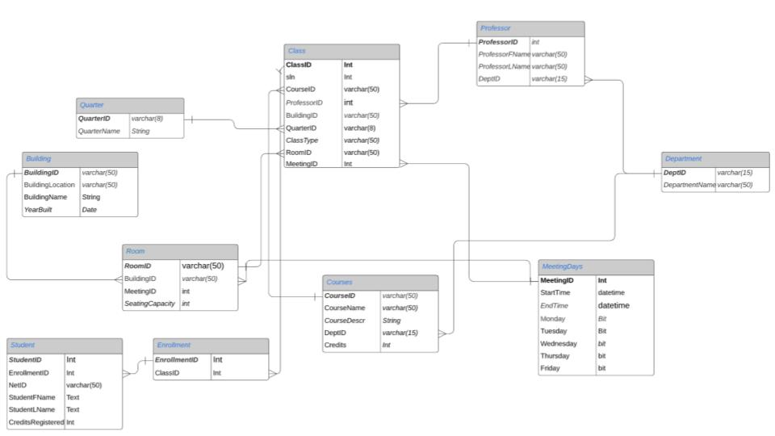

Databases and Data Modeling Project
-
Through this exercise, I utilized SQL, NoSQL, and data analysis skills to guide a student through the UW Registration system and how it works. With this Database a student will be able to register for classes, whether they be online or not, and access information about their courses, buildings, and professors
Below is the ERD that represents the database we coded through Azure Data Studio.
 -
Relationships and Possible Queries
Given that registration can depend on many different factors we limited the number of IDs we had. We wanted to be able to answer multiple questions a student might have.
For example: What is the oldest building that had an Informatics class in it last year (2019)? This would be answered by querying:
Create View OldestBuildingwithInfo as
(
Select top 1 B.BuildingName, B.YearBuilt
from Building as B
JOIN Room as R on r.BuildingID = b.buildingID
JOIN Class as C on c.RoomID = R.RoomID
JOIN Courses as X ON c.CourseID = x.CourseID
JOIN Quarter as Q on c.QuarterID = q.quarterID
where x.DeptID = 'INFO'
and Q.QuarterYear = 2019
order by B.YearBuilt asc
);
-
Sources and Script
The database created was modeled after the UW Registration system and its many components.
Here is the code for the project!